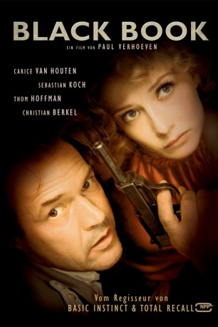

#2827 Black Book
 
 IMDB-Wertung: 7.8 / 10
IMDB-Wertung: 7.8 / 10  Metascore: 71
Metascore: 71 
Drama von Paul Verhoeven um die jüdische Sängerin Rachel Stein, die nach einem überlebten Bobenanschlag während des Zweiten Weltkrieges in die Niederlande flüchtet, wo sie sich dem niederländischen Widerstand anschließt und eine Liaison mit einem deutschen Offizier beginnt.
Jahr: 2006
Dauer: 145 Minuten
FSK: 16
Land: Niederlande Studio: NFP Marketing & DistributionTonspuren: DD5.1 - ,
Untertitel:
Auflösung: 1080p (1920x816) Größe: 6348 MB
Genre: Thriller, Drama, Krieg
Regisseur:  Paul Verhoeven
Paul Verhoeven
Drehbuch: Gerard Soeteman, Paul Verhoeven
Soundtrack: Anne Dudley
Darsteller:
 Carice van Houten als Rachel Stein / Ellis de Vries
Carice van Houten als Rachel Stein / Ellis de Vries Sebastian Koch als Ludwig Müntze
Sebastian Koch als Ludwig Müntze- Thom Hoffman als Hans Akkermans
- Halina Reijn als Ronnie
 Waldemar Kobus als Günther Franken
Waldemar Kobus als Günther Franken Derek de Lint als Gerben Kuipers
Derek de Lint als Gerben Kuipers Christian Berkel als General Käutner
Christian Berkel als General Käutner Michiel Huisman als Rob
Michiel Huisman als Rob Matthias Schoenaerts als Joop
Matthias Schoenaerts als Joop- Johnny de Mol als Theo
- Rixt Leddy als Anny
- Skip Goeree als Ronnie's husband
 Garrick Hagon als British General
Garrick Hagon als British General- Liza de Weerd als Receptionist
- Arno Hazebroek als MP , uncredited
- Emile Jansen als Miscellaneous , uncredited
- Rik Sinkeldam als Soldier , uncredited
- Dolf de Vries als Notary Wim Smaal
- Peter Blok als Van Gein
- Ronald Armbrust als Tim Kuipers
- Frank Lammers als Kees
- Xander Straat als Maarten
- Diana Dobbelman als Mrs. Smaal
- Lidewij Mahler als Linda
- Pieter Tiddens als Herman
- Gijs Naber als Cas
- Dirk Zeelenberg als Siem
- Michiel de Jong als David
- Jobst Schnibbe als Driver Müntze
- Boris Saran als Joseph
- Jack Vecht als Mr. Stein
- Jacqueline Blom als Mrs. Stein
- Seth Kamphuijs als Brother Max
- Herman Boerman als Skipper Willi
- Bert Luppes als Mr. Tjepkema
- Marisa Van Eyle als Mrs. Tjepkema
- Heleen Mineur als Stientje Tjepkema
- Bas van der Horst als Jantje Tjepkema
- Foeke Kolff als Children Tjepkema
- Merel van Houts als Children Tjepkema
- Charlotte Rinnooy Kan als Children Tjepkema
- Maaike Kempeneers als Children Tjepkema
- Janni Goslinga als Lady in Fur Coat
- Wimie Wilhelm als Female Prison Guard
- Theo Maassen als Prison Guard with Baret
- Tjebbo Gerritsma als Prison Guard with Accordion
- Timothy Deenihan als Canadian Colonel
- Nolan Hemmings als Captain British Intelligence
- Ronald de Bruin als Dutch SD in Train #1
- Menno Van Beekum als Dutch SD in Train #2
Datei: X:\2006(A-F)\Black Book (2006, FSK16, 1920x816).mkv seit 21.12.2015
Festplatte: HD 2005(G-Z)-2006(A-Z)
 Es gibt insgesamt 56 Filme in der Gruppe '2006(A-F)'
Es gibt insgesamt 56 Filme in der Gruppe '2006(A-F)'